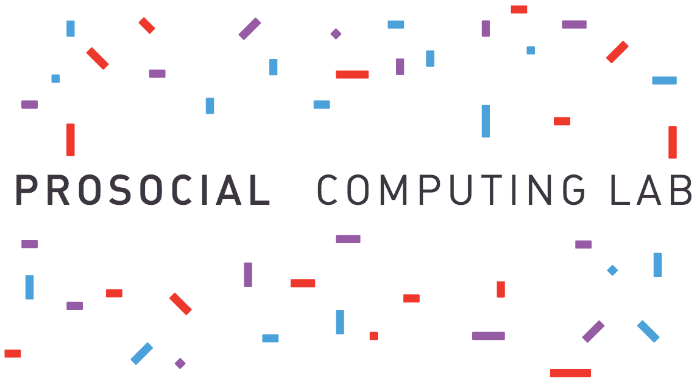

<div class="row">
  <div class="text-center">
    
  </div>
    <hr>
    <div id="mission">
      We're an interdisciplinary research lab creating positive change<br/>
      through studying, designing, and building human centered technologies.
    </div>
    <hr>
  </div>
<div>

<!-- begin social area -->
<div class="row">
  <div class="col-md-6">
   <h4>News</h4>
    <a class="twitter-timeline" href="https://twitter.com/prosocialcomp" data-chrome="noheader noborders transparent" data-widget-id="566351043395469313">Tweets by @prosocialcomp</a> <script>!function(d,s,id){var js,fjs=d.getElementsByTagName(s)[0],p=/^http:/.test(d.location)?'http':'https';if(!d.getElementById(id)){js=d.createElement(s);js.id=id;js.src=p+"://platform.twitter.com/widgets.js";fjs.parentNode.insertBefore(js,fjs);}}(document,"script","twitter-wjs");</script>
  </div>
  <div class="col-md-6">
    <h4>Pictures</h4>
    
    <script>
      $(document).ready(function () {

        $('#instafeed').pongstgrm({
          show:         'recent'
        });
           

      });
    </script>

    <div id="instafeed"></div>

  </div>
</div>
<!-- end social footer -->
